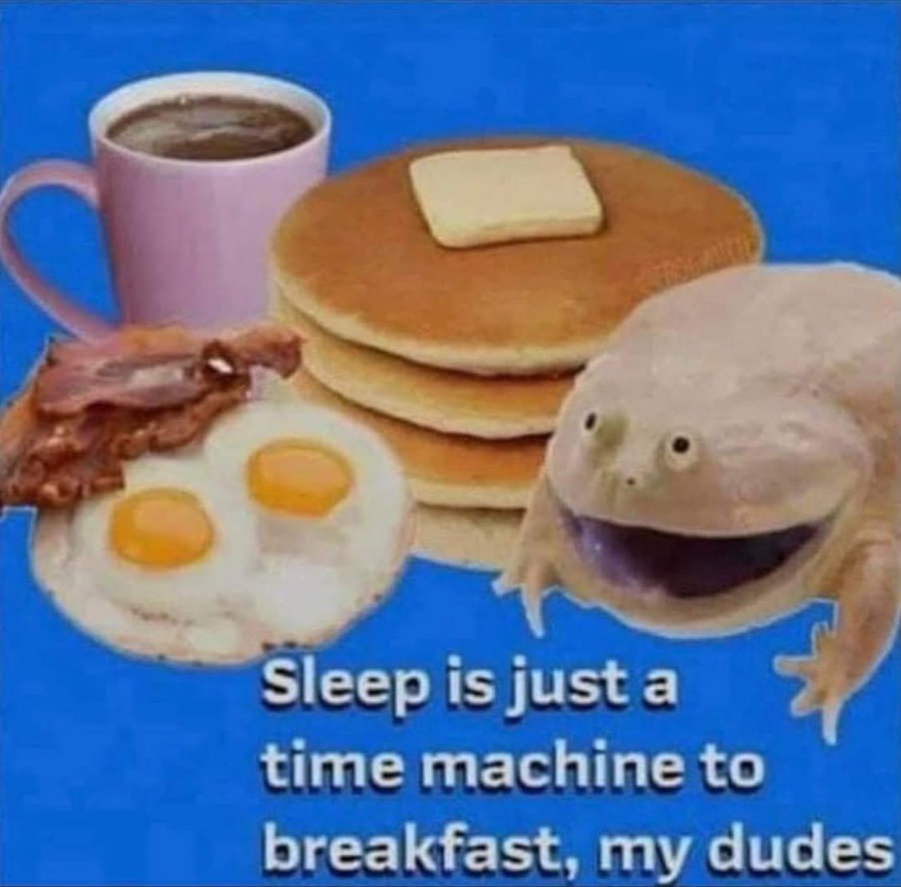

This post includes dynamic parts that require javascript. javascript seems to be disabled on your browser
The time is currently 14:19, which can also be written as A439.
Let's assume you've been awake since
That means you've been awake for 439 minutes
You only reach a 1000 minutes after being awake for 16 hours and 40 minutes, leaving 7 hours and 20 minutes for sleep. That means most people are awake for around 1000 minutes a day.
In other words, the amount of minutes you've been awake is a good estimate of how much percent (promille) of the day you've spent.
Time is the most important resource we have, and it's therefore useful to be aware of how much we're spending.
Time is not divided using maths and units and calculations. The divisions in time are mostly ways of combining time with language. Because of this, there are lots and lots and lots of systems, with subtle differences and mostly used interchangably. The world is complicated.
There are four major ways of defining time:
Here are some of the units using the building block defined way
Let's define a system that's based on my schedule.
I live in the industrialized world. I have an office job with a consistent schedule. I value routine.
My routine revolves around the day. It revolves around the time I am awake and the time I am asleep.
It'd be nice if the new system can be integrated with the current one. It should be relatively easy to switch between the two. One should be able to mentally convert the systems with less than a month of practice.
One is awake for around 1000 minutes, which is a nice round number that integrates with the current system. The existing units can be integrated.
The epoch of the day is oddly defined. It's based on "midnight" which is around an eigth into my sleep. It's based on midday, the time when the sun is the highest in the sky. But that definition got muddled over the last few centuries. It's at the highest point in the sky 1h30 minutes AFTER noon. The epoch's off by ONE AND A HALF HOURS. Partially to make bisnis easier. Partially for a more united Europe. Partially because of historical energy needs. Partially because people think "summer time" is nice because it's WARMER because the name has SUMMER IN IT. (i am getting annoyed)
Where was I? Oh I see, we can redifine the epoch. It's arbitrarly defined, with a definition that has become less useful over time.
Let's define the epoch at when I wake up. The day starts when I start. That has the nice bonus of time hitting 1000 minutes when I go to bed. I can do that because it's a system defined for me and me alone.
To make that a possibility, one should primarily use the minute unit. We'll ditch the hour to accomplish this.
Now, what about nighttime? We could either keep counting from 1000 to 1439, or we could switch to an AM/PM like system. Use vowels because they're distinct. A for Awake, O for overnight.
Now, we could make the O-range from 000 to 439 or from 000 to 999, changing the definition of a minute. We'll stick with the minute-defined time. We wouldn't want to change our fundamental unit. Keeping the minute inline also allows us to convert. Although I wish you the best of luck doing that a O140 (3AM)
A/O starts the time when I wake up, 7AM. It is A000 (Oh Zero). You usually don't have to pronounce A, just like you don't say AM. It's obvious from context. Notation should always include A/O. 10 minutes later I'm up at A010 (Oh Ten). At A330 (Three Thirty) (12:30 PM) it's time for lunch. It's time to go to bed at A950 (10:50PM). I sleep well and don't see the O-range.
We have a system that keeps track of your percentage (promille) of your waking duration spent. It starts when you wake up and stops when you go to bed. Time keeps going on while you're asleep, but you don't notice. Sleep is a time machine to breakfast.
